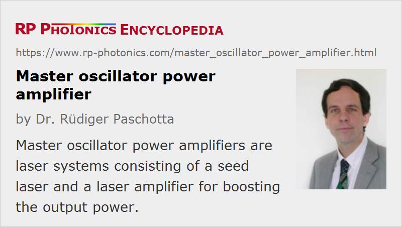

Master Oscillator Power Amplifier
Acronym: MOPA
Definition: a laser system consisting of a seed laser and a laser amplifier for boosting the output power
More specific term: master oscillator fiber amplifier
German: Laser-/Verstärker-Kombination
Categories: lasers, optical amplifiers
How to cite the article; suggest additional literature
Author: Dr. Rüdiger Paschotta
The term master oscillator power amplifier (MOPA) refers to a configuration consisting of a master laser (or seed laser) and an optical amplifier to boost the output power. A special case is the master oscillator fiber amplifier (MOFA), where the power amplifier is a fiber device. In other cases, a MOPA may consist of a solid-state bulk laser and a bulk amplifier, or of a tunable external-cavity diode laser and semiconductor optical amplifier.
Although a MOPA configuration is in principle more complex than a laser which directly produces the required output power, the MOPA concept can have certain advantages:
- With a MOPA instead of a laser, it can be easier to reach the required performance e.g. in terms of linewidth, wavelength tuning range, beam quality or pulse duration if the required power is very high. This is because various performance aspects are decoupled from the generation of high powers. This gives extra flexibility, e.g. when a gain-switched laser diode is used as a seed laser. Note also that it can be advantageous to avoid the presence of additional optical components such as wavelength tuning elements in a high-power laser resonator; with a MOPA architecture, one can place these in the oscillator, where they do not have to withstand high optical intensities, do not spoil the power efficiency, etc.
- The same aspects apply to other kinds of modulation, e.g. intensity or phase modulation: it may be advantageous to modulate the low-power seed laser, or to use an optical modulator between seed laser and power amplifier, rather than to modulate a high-power device directly. Slower power modulation may be done by adjusting the amplifier's pump power, without significantly affecting e.g. the obtained pulse duration or wavelength.
- The combination of an existing laser with an existing amplifier (or an amplifier chain) may be simpler than developing a new laser with higher output power.
- The optical intensities are lower in an amplifier, compared with the intracavity intensities in a laser.
However, the MOPA approach can also have disadvantages:
- The complexity of the setup is higher.
- The wall-plug efficiency is often lower. However, it may also be higher, e.g. if that approach allows to remove lossy optical elements from the high-power stage.
- The resulting laser noise tends to be higher, since an amplified source can not reach the shot noise level (→ amplifier noise). Effects of drifts of the seed power may be suppressed, however, if the amplifier is operated in a strongly saturated regime.
- A MOPA can be sensitive to back-reflections, which are amplified again before entering the master laser. This feedback sensitivity can often be cured only by placing a Faraday isolator behind the amplifier. Particularly for high-power pulsed devices, this can introduce serious limitations.
MOPA architectures are also used for pulsed laser sources. In that case, the amplifier may be used as a reservoir of energy. If a pulse from the seed laser extracts a significant fraction of the stored energy, the effect of gain saturation is relevant: the amplifier gain drops during the pulse. This can lead to a deformation of the temporal pulse shape. In some cases, the pulse shape from the seed source is tailored so as to obtain the desired pulse shape after amplification.
Questions and Comments from Users
Here you can submit questions and comments. As far as they get accepted by the author, they will appear above this paragraph together with the author’s answer. The author will decide on acceptance based on certain criteria. Essentially, the issue must be of sufficiently broad interest.
Please do not enter personal data here; we would otherwise delete it soon. (See also our privacy declaration.) If you wish to receive personal feedback or consultancy from the author, please contact him e.g. via e-mail.
By submitting the information, you give your consent to the potential publication of your inputs on our website according to our rules. (If you later retract your consent, we will delete those inputs.) As your inputs are first reviewed by the author, they may be published with some delay.
See also: optical amplifiers, master oscillator fiber amplifier, amplifier noise, The Photonics Spotlight 2008-09-24, The Photonics Spotlight 2008-12-16, The Photonics Spotlight 2010-03-22
and other articles in the categories lasers, optical amplifiers
|  |
If you like this page, please share the link with your friends and colleagues, e.g. via social media:
These sharing buttons are implemented in a privacy-friendly way!